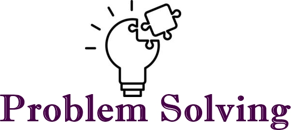

Proficient in C++, with a strong understanding
of object-oriented programming, memory management, and advanced features
like templates and the Standard Template Library (STL).
Experienced in Java, with a focus on building robust,
high-performance applications. Familiar with Java SE and Java EE,
including frameworks such as Spring and Hibernate. Developed several desktop and web applications.

Skilled in Python, known for its simplicity and readability.
Used Python for web development with frameworks like Django and Flask,
data analysis with libraries such as pandas and NumPy, and automation scripts.

Skilled in HTML for structuring web content. Familiar with HTML5
and its new elements and APIs. Used HTML to create accessible and semantically correct web pages.

Proficient in JavaScript for front-end development, creating dynamic and interactive
web applications. Familiar with ES6+ features and frameworks such as React and Node.js.

Proficient in CSS for styling web pages. Experienced
with CSS3 features, responsive design principles, and pre-processors like SASS.

Proficient in SQL for database management and data manipulation. Experienced in writing
complex queries, stored procedures, and optimizing database performance.
Experienced in React for building user interfaces. Familiar with React hooks, context API,
and state management libraries like Redux. Built several SPAs (Single Page Applications) using React.

Skilled in Tailwind CSS, a utility-first CSS framework. Used Tailwind to create custom designs
efficiently without leaving the HTML file, enabling rapid prototyping and development.

Proficient in using Git for version control. Familiar with branching, merging, and resolving conflicts.
Used Git for collaborative development and managing codebases in projects.

Skilled in breaking down complex issues into manageable parts and systematically developing optimal solutions using
efficient algorithms and data structures.